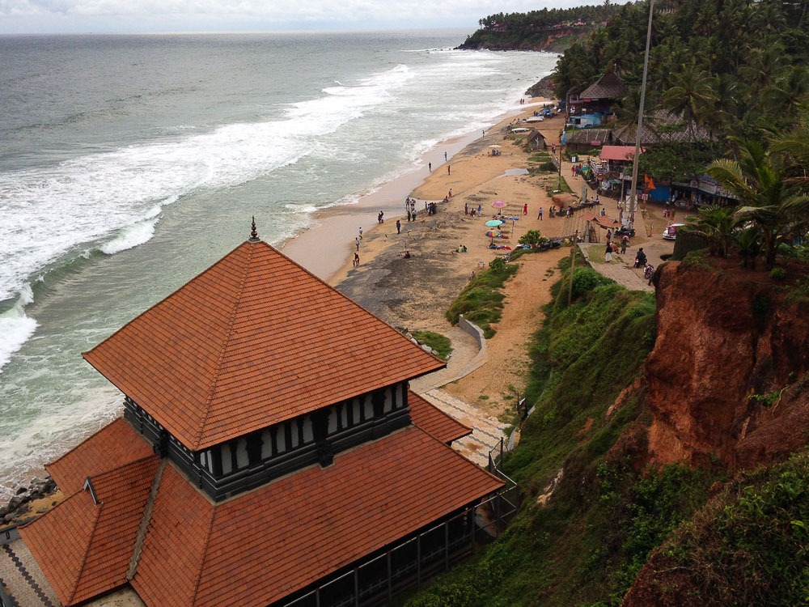
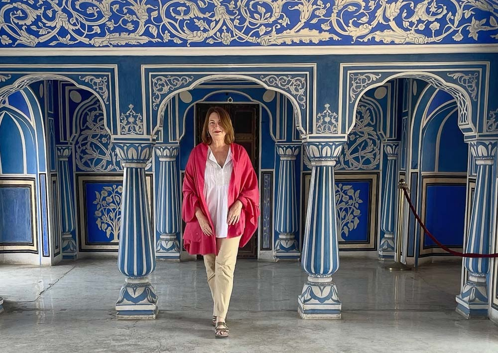
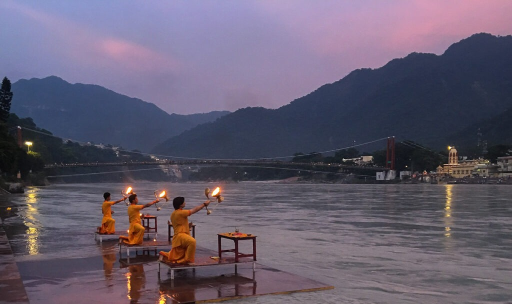
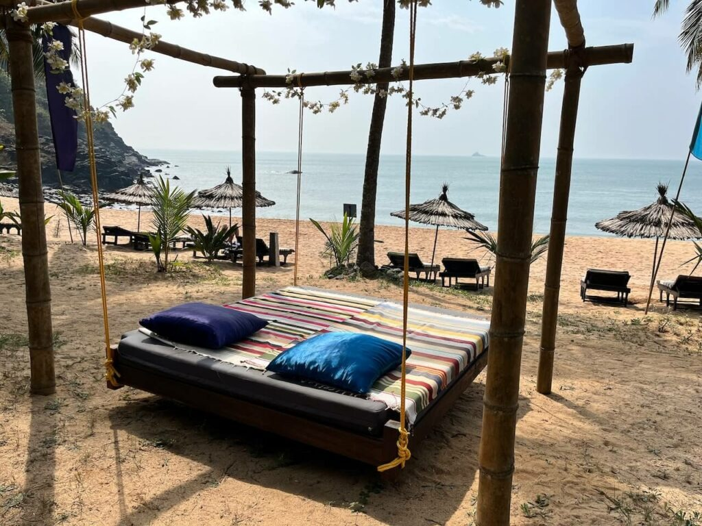
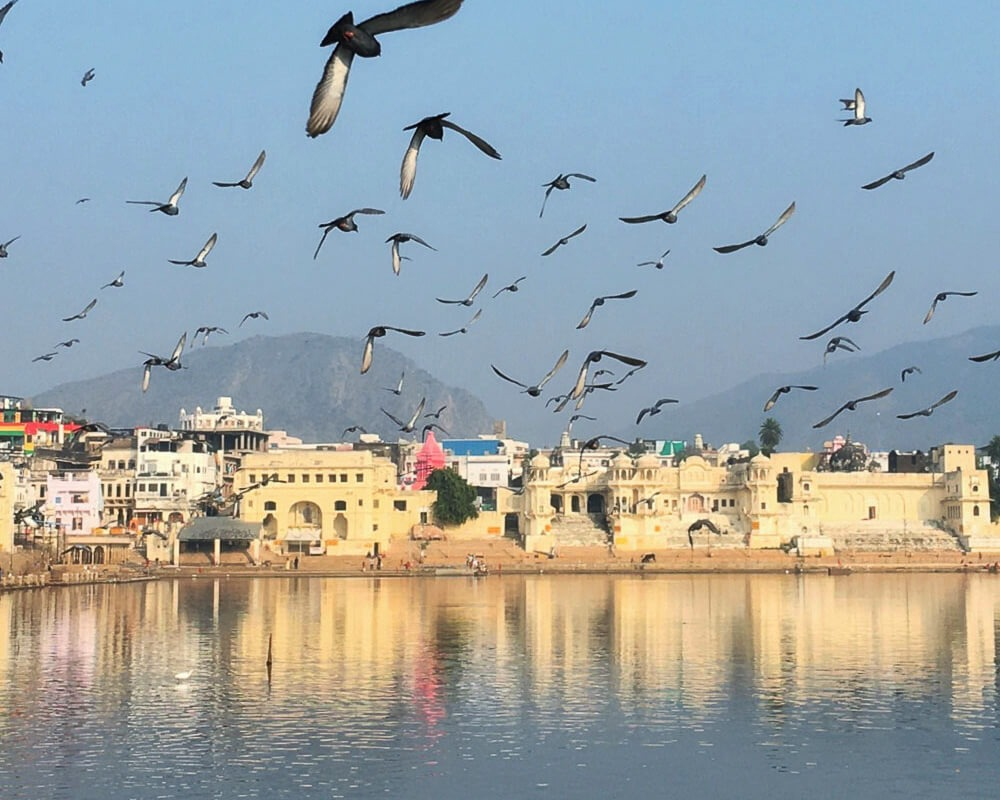

India is a great destination for solo travelers, including female solo travelers. With a little research and advance planning, you can help make your trip to India safe, smooth, and hassle-free. Knowing where to go, the best destinations for solo travellers, helps a lot. These are my picks for top solo travel destinations in India.
For some additional travel tips, scroll to the end.
Top 5 destinations in India for solo travelers
1.Kerala
Kerala is a tropical state in south India, and the ideal place for a soft landing. It’s one of my favourite states in India and perfect for solo travelers. Almost anywhere in Kerala would be good for solo travelers, except perhaps a boat trip on the backwaters. I particularly like Cochin and Varkala. Cochin is a historic trading port with a lot of history and culture packed into a small and highly walkable area. Cochin is also a gateway to the backwaters. Varkala is a beach town that ranges along the top of a dramatic red cliff. The north cliff is lined with cafes, restaurants, shops, resorts, and boutique hotels. Or, you can escape to the south cliff, which is much quieter, with a beautiful beach and the feeling of a local community. Varkala is also a good place to take some time out of your travels and enjoy the vibes.
2.Jaipur
Jaipur is the capital of Rajasthan and one of my favourite cities in India. It’s an incredibly historical city, full of tales of romance and chivalry. There are three magnificent hilltop forts, many royal palaces – some are now luxury hotels – and a thriving arts and crafts industry. Jaipur is a city of creative industry! Leather shoes, hand block print fabrics, precious gems, and wooden furniture are just some of the specialty items you can buy. And it’s also the best city in India for hotels, there is a fantastic array in every budget, and you won’t have any trouble meeting other travellers.
3.Rishikesh
The so-called Yoga capital of the world, Rishikesh is in north India, about a five hour drive from Delhi. The picturesque location on the banks of the Ganga River, in the foothills of the Himalayas, is part of the draw. In recent years, Rishikesh has boomed as a tourist hot-spot in India, and sadly has become much busier and over-developed. However, there are still hundreds of Yoga schools and ashrams in Rishikesh that attract Yoga students and travellers from far and wide. Lots of hostels and guest houses, cafes overlooking the river, and a mind-boggling range of classes – from Yoga to meditation, and from music to dancing – make Rishikesh one of the best options for solo travellers to India. Meeting other visitors is easy, from October to March, the cafes are full of them. Tip: Don’t overlook going to the Chaurashi Kutiya (Beatles Ashram). It’s a lush, tranquil place and worth spending a few hours, especially in the morning.
4.South Goa
Goa is probably the most famous place in India for tourists. A tiny, tropical state on the west coast, Goa is known for sun and fun. Divided into two halves, North Goa tends to be much more developed, busier, and more of a party destination. I much prefer South Goa, and recommend it for solo travellers to India. South Goa is greener, more laid-back, and much less developed. Quiet beaches like Agonda and Patnem draw a slightly older crowd, people who are more into Yoga, creativity, wellness, and relaxing. There are also lots of offbeat things to do in Goa, from dolphin cruises, to hiking, to visiting old Portuguese mansions.
5.Pushkar
A very small town in the Rajasthan desert, Pushkar is a favourite place for solo travellers in India. A sacred town that encircles a small, man-made lake, Pushkar is a very chilled place. There are hippie cafes on the lake with great views of the sunset, and rooftop restaurants and lounges to wile away the languid days, plus a bustling bazaar to dive into when you want to feel some buzz – and pick up some of those elephant patterned harem pants you see all the backpackers wearing. There’s actually not much to do in Pushkar … and therein lies the charm.
Travel safety tips for female solo travelers
India of course has some unique cultural aspects that can make travel challenging in some ways. On my India-focused travel blog, I share My top 20 safety tips for women travelling in India.
I have personally found that wearing modest clothing in India, and even Indian clothes such as the three piece salwar kameez, goes a long way to make me feel welcome and safe. These are my tips on what to wear while traveling in India.
New visitors to India should consider joining a small group trip or hiring a custom tour operator to plan and book their trip. There’s a steep learning curve to traveling in India, and getting some help while you get your feet wet will make your trip much more enjoyable. This is one of the reasons I started my custom tour company India for Beginners. We are dedicated to helping women travel safely and well in India. We design custom itineraries, offer a few small group tours, and hold your hand in India!